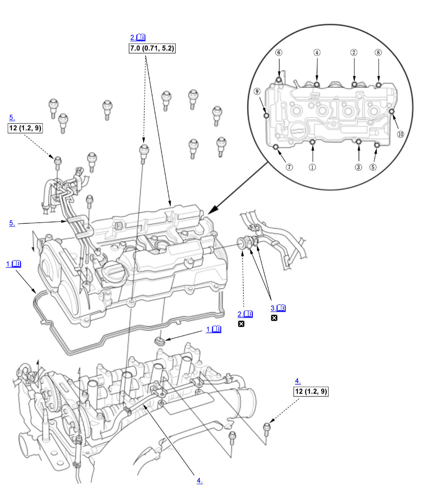
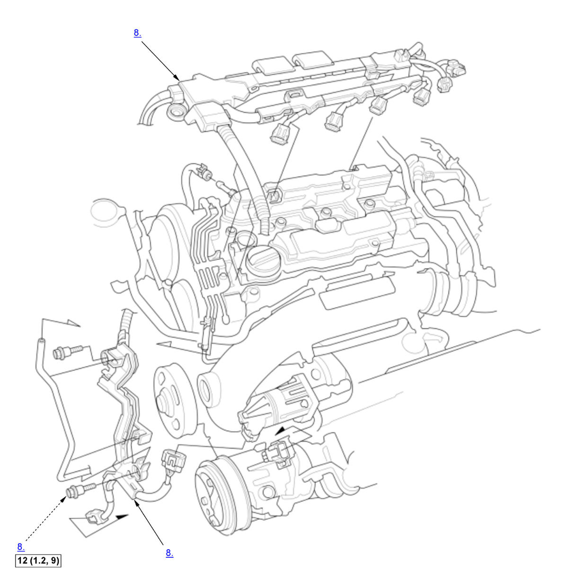

Cylinder Head Cover Removal and Installation (K20C1) (2017 2018 2019 2020 2021): Installation: Procedure
Numbered call-outs in figure pertain to list numbers in following procedure.

Courtesy of HONDA, U.S.A., INC. |
Detailed information, notes, and precautions |
 |
Torque: N.m (kgf.m, lbf.ft) |
 |
Replace |
Numbered call-outs in figure pertain to list numbers in following procedure.

Courtesy of HONDA, U.S.A., INC. |
Torque: N.m (kgf.m, lbf.ft) |
- Head Cover Gasket - Install
1. Thoroughly clean the head cover gaskets (A) and the grooves of the cylinder head cover (B). NOTE: Check and, if necessary, replace the head cover gaskets.
2. Check the spark plug seals (C) for damage. If any seals are damaged, replace the cylinder head cover.
3. Install the head cover gaskets in the grooves of the cylinder head cover. Make sure the head cover gaskets are seated securely.
- Cylinder Head Cover - Install
1. Apply a light coat of new engine oil to the lip of the spark plug seals. 2. Apply liquid gasket to the cam chain case, the No. 5 rocker shaft holder and the high pressure fuel pump base mating areas.
3. Set the spark plug seals on the spark plug tubes. Place the cylinder head cover on the cylinder head, then slide the cylinder head cover slightly back and forth to seat the head cover gaskets.
4. Inspect the spark plug seals for damage.
5. Tighten the bolts in two steps. In the final step torque bolts, in sequence, to the specified torque.
- Break Head Band - Precaution
NOTE: When installing the break head band, do the following procedures. 1. Tighten the break head bolt until the bolt head (A) is twisted off completely.
NOTE: Do not use an air tool.
2. Make sure the stopper end (B) contacts to the housing end (C) after tightening the break head bolt.
- Water Bypass Pipe - Install
- Turbocharger Bypass Control Valve Solenoid Pipe A - Install
- PCV Valve - Install
1. If the PCV valve is removed, install the PCV valve. - Dipstick - Install
- Harness Holder - Install
- Connector (VTC Oil Control Solenoid Valve B) - Connect
- Connector (CMP Sensor A) - Connect
- Connector (EVAP Canister Purge Valve) - Connect
- Ignition Coil - Install